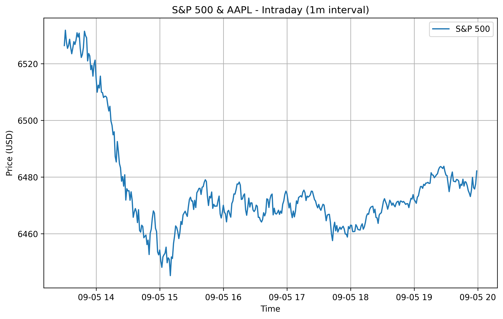

Welcome to my finance projects portfolio!
This site showcases Python projects I’ve built in
quantitative finance, data analysis, and risk modeling.
A Python tool that tracks stock & crypto holdings, computes performance metrics, and compares them against benchmarks like the S&P 500.
Here’s a sample plot of my portfolio compared to the S&P 500 index.

I’m learning Python for Finance with the goal of moving into quantitative analysis and trading systems. Check out my GitHub profile for source code!